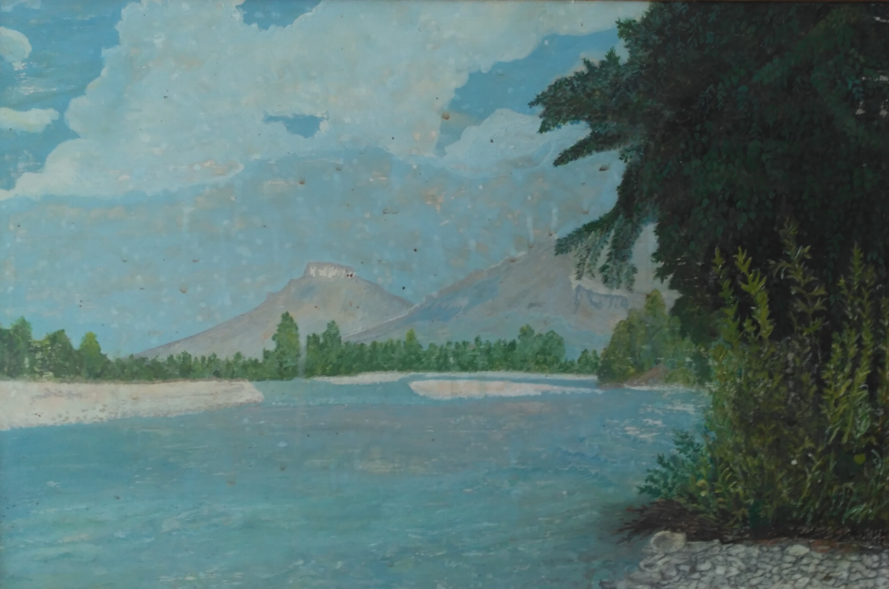

Бьются о тёмные скалы,
Волны и шумные валы,
В низу стоит сосновый бор
И смотрит на вершины гор.
Кричат над головой орлы,
Весенней не дождавшись мглы,
Вот солнца луч прибился к нам,
К Альпийским молодым лугам.
Я слышу, как гремит обвал,
Камнями на тропу упал,
Он реку всю загородил,
Поток воды остановил.
Лишь на минутку присмирев,
Лаба на милость сменит гнев,
Но через миг снесла река,
Все затопила берега.
Лаба, прорвавшись чрез обвал,
Который грудою лежал,
Вся устремилась силой вод,
Под ледяной лавиной свод!
Семён Романов, 2015г.
